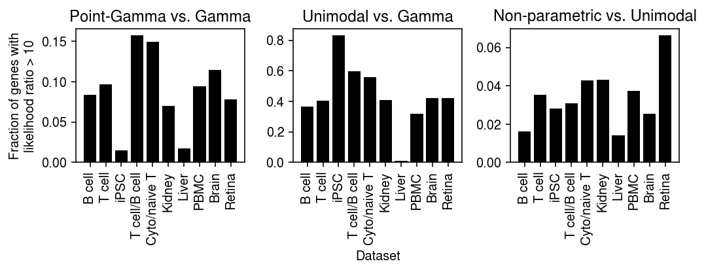
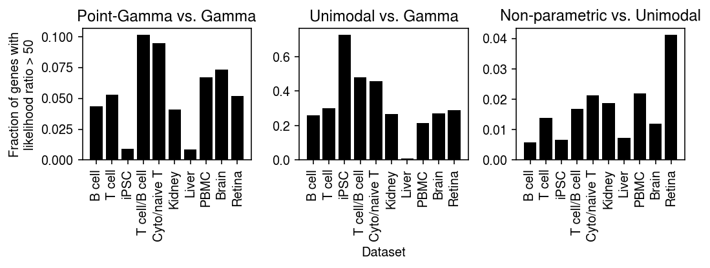
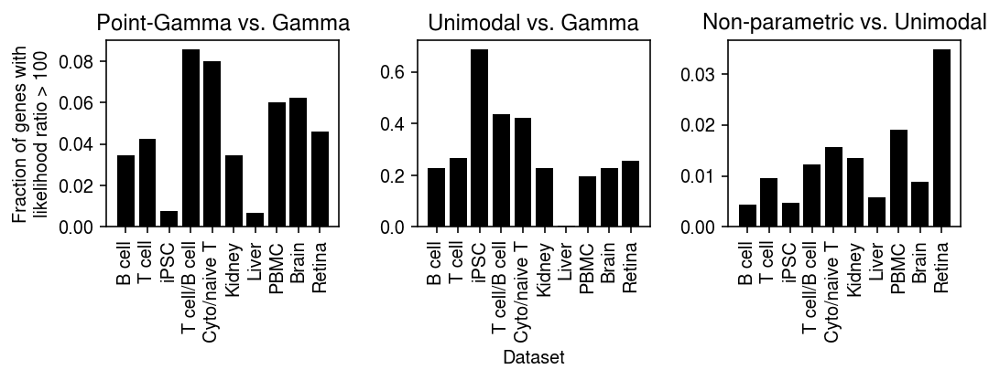
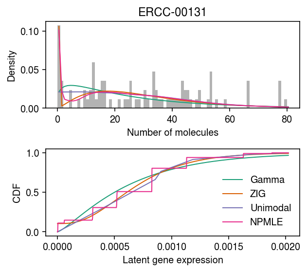

Marginal log likelihood comparison of expression models
Table of Contents
Introduction
We previously used a goodness of fit test and out-of-sample (marginal) log likelihood to assess whether the data were adequately described by a given expression model. Here, we compute the in-sample marginal log likelihood, in order to make direct comparisons between expression models.
Setup
import anndata import numpy as np import os import pandas as pd import scanpy as sc import scipy.optimize as so import scipy.special as sp import scipy.stats as st import scmodes
import rpy2.robjects.packages import rpy2.robjects.pandas2ri rpy2.robjects.pandas2ri.activate() ashr = rpy2.robjects.packages.importr('ashr')
%matplotlib inline %config InlineBackend.figure_formats = set(['retina'])
import matplotlib.pyplot as plt plt.rcParams['figure.facecolor'] = 'w' plt.rcParams['font.family'] = 'Nimbus Sans'
Results
Data
Prepare the data in h5ad.
import functools as ft def read_chromium(sample): x = sc.read('/project2/mstephens/aksarkar/projects/singlecell-modes/data/negative-controls/svensson_chromium_control.h5ad') x = x[x.obs['sample'] == sample,x.var.filter(like='ERCC', axis='index').index] sc.pp.filter_genes(x, min_cells=1) x.var = x.var.reset_index() return x def read_dropseq(): x = sc.read('/project2/mstephens/aksarkar/projects/singlecell-modes/data/negative-controls/macosko_dropseq_control.h5ad') x = x[:,x.var.filter(like='ERCC', axis='index').index] sc.pp.filter_genes(x, min_cells=1) x.var = x.var.reset_index() return x def read_indrops(): x = sc.read('/project2/mstephens/aksarkar/projects/singlecell-modes/data/negative-controls/klein_indrops_control.h5ad') x = x[:,x.var.filter(like='ERCC', axis='index').index] sc.pp.filter_genes(x, min_cells=1) x.var = x.var.reset_index() return x def read_gemcode(): x = sc.read('/project2/mstephens/aksarkar/projects/singlecell-modes/data/negative-controls/zheng_gemcode_control.h5ad') x = x[:,x.var.filter(like='ERCC', axis='index').index] sc.pp.filter_genes(x, min_cells=1) x.var = x.var.reset_index() return x def _read_10x(k, return_df=False, min_detect=0.01, chunk=None, chunksize=500): x = scmodes.dataset.read_10x(f'/project2/mstephens/aksarkar/projects/singlecell-ideas/data/10xgenomics/{k}/filtered_matrices_mex/hg19/', return_adata=not return_df, return_df=return_df, min_detect=min_detect) x.var.columns = ['gene', 'name'] x.obs['size'] = x.X.sum(axis=1).A.ravel() if chunk is None: return x else: return x[:,chunk * chunksize:(chunk + 1) * chunksize] def _mix_10x(k1, k2, min_detect=0.01, return_y=False, chunk=None, chunksize=500): x1 = _read_10x(k1, min_detect=0) x2 = _read_10x(k2, min_detect=0) x = x1.concatenate(x2) sc.pp.filter_genes(x, min_cells=min_detect * x.shape[0]) x.obs['size'] = x.X.sum(axis=1).A.ravel() if chunk is None: return x else: return x[:,chunk * chunksize:(chunk + 1) * chunksize] def _cd8_cd19_mix(*args, **kwargs): return _mix_10x('cytotoxic_t', 'b_cells', *args, **kwargs) def _cyto_naive_mix(*args, **kwargs): return _mix_10x('cytotoxic_t', 'naive_t', *args, **kwargs) def read_ipsc(chunk=None, chunksize=500): x = anndata.read_h5ad('/project2/mstephens/aksarkar/projects/singlecell-ideas/data/ipsc/ipsc.h5ad') x.obs['size'] = x.X.sum(axis=1).A.ravel() if chunk is None: return x else: return x[:,chunk * chunksize:(chunk + 1) * chunksize] def read_liver(chunk=None, chunksize=500): x = anndata.read_h5ad('/project2/mstephens/aksarkar/projects/singlecell-ideas/data/human-cell-atlas/liver-caudate-lobe/liver-caudate-lobe.h5ad') x.obs['size'] = x.X.sum(axis=1).A.ravel() if chunk is None: return x else: return x[:,chunk * chunksize:(chunk + 1) * chunksize] def read_kidney(chunk=None, chunksize=500): x = anndata.read_h5ad('/project2/mstephens/aksarkar/projects/singlecell-ideas/data/human-cell-atlas/kidney/kidney.h5ad') x.obs['size'] = x.X.sum(axis=1).A.ravel() if chunk is None: return x else: return x[:,chunk * chunksize:(chunk + 1) * chunksize] def read_brain(chunk=None, chunksize=500): x = anndata.read_h5ad('/project2/mstephens/aksarkar/projects/singlecell-ideas/data/gtex-droncseq/gtex-droncseq.h5ad') sc.pp.filter_genes(x, min_counts=.01 * x.shape[0]) x.obs['size'] = x.X.sum(axis=1).A.ravel() if chunk is None: return x else: return x[:,chunk * chunksize:(chunk + 1) * chunksize] def read_retina(chunk=None, chunksize=500): x = anndata.read_h5ad('/project2/mstephens/aksarkar/projects/singlecell-ideas/data/human-cell-atlas/adult-retina/adult-retina.h5ad') query = x.obs['donor_organism.provenance.document_id'] == '427c0a62-9baf-42ab-a3a3-f48d10544280' y = x[query] sc.pp.filter_genes(y, min_cells=.01 * y.shape[0]) y.obs['size'] = y.X.sum(axis=1).A.ravel() if chunk is None: return y else: return y[:,chunk * chunksize:(chunk + 1) * chunksize] def read_pbmc_10k_v3(chunk=None, chunksize=500): x = anndata.read_h5ad('/scratch/midway2/aksarkar/modes/10k_pbmc_v3.h5ad') sc.pp.filter_genes(x, min_cells=0.01 * x.shape[0]) x.obs['size'] = x.X.sum(axis=1).A.ravel() if chunk is None: return x else: return x[:,chunk * chunksize:(chunk + 1) * chunksize] data = { 'dropseq': read_dropseq, 'indrops': read_indrops, 'chromium1': lambda: read_chromium('20311'), 'chromium2': lambda: read_chromium('20312'), 'gemcode': read_gemcode, 'cytotoxic_t': ft.partial(_read_10x, k='cytotoxic_t'), 'b_cells': ft.partial(_read_10x, k='b_cells'), 'ipsc': read_ipsc, 'cytotoxic_t-b_cells': _cd8_cd19_mix, 'cytotoxic_t-naive_t': _cyto_naive_mix, 'pbmc_10k_v3': read_pbmc_10k_v3, 'liver-caudate-lobe': read_liver, 'kidney': read_kidney, 'brain': read_brain, 'retina': read_retina, } chunksize = 500 chunks = { 'b_cells': 6417 // chunksize, 'brain': 11744 // chunksize, 'cytotoxic_t': 6530 // chunksize, 'cytotoxic_t-b_cells': 6647 // chunksize, 'cytotoxic_t-naive_t': 6246 // chunksize, 'ipsc': 9957 // chunksize, 'kidney': 15496 // chunksize, 'liver-caudate-lobe': 3181 // chunksize, 'pbmc_10k_v3': 12144 // chunksize, 'retina': 10047 // chunksize, } control = list(data.keys())[:5] non_control = list(data.keys())[5:]
Report the dimensions of each data set.
pd.DataFrame([data[k]().shape for k in data], columns=['num_samples', 'num_genes'], index=data.keys())
num_samples num_genes dropseq 84 81 indrops 953 103 chromium1 2000 88 chromium2 2000 88 gemcode 1015 91 cytotoxic_t 10209 6530 b_cells 10085 6417 ipsc 5597 9957 cytotoxic_t-b_cells 20294 6647 cytotoxic_t-naive_t 20688 6246 pbmc_10k_v3 11769 12144 liver-caudate-lobe 8856 16200 kidney 11233 15496 brain 14963 11744 retina 21285 10047
Estimate marginal log likelihood
Estimate the marginal likelihood for each data set, for each gene, for each family of expression models.
sbatch --partition=broadwl -n1 -c28 --exclusive --job-name=llik --time=30:00 -a 0-48 #!/bin/bash source activate scmodes python <<EOF <<imports>> import anndata import multiprocessing as mp import os <<data>> tasks = [(m, d) for m in ('point', 'gamma', 'point_gamma', 'unimodal', 'npmle') for d in data if not (m in ('unimodal', 'npmle') and d in chunks) and not (m == 'npmle' and d in control)] m, d = tasks[int(os.environ['SLURM_ARRAY_TASK_ID'])] with mp.Pool() as pool: x = data[d]() res = scmodes.benchmark.evaluate_llik(x, pool=pool, methods=[m]) res.to_csv(f'/scratch/midway2/aksarkar/modes/llik/{d}-{m}.txt.gz', compression='gzip', sep='\t') EOF
Fit non-parametric expression models serially for control data, to avoid memory issues.
for d in control: (scmodes.benchmark.evaluate_llik(data[d](), methods=['npmle'], max_grid_updates=20, tol=1e-5) .to_csv(f'/scratch/midway2/aksarkar/modes/llik/{d}-npmle.txt.gz', compression='gzip', sep='\t'))
Shard data sets to fit unimodal/non-parametric expression models within the
midway2 time/memory limits.
sbatch --partition=broadwl -n1 -c28 --exclusive --job-name=llik --time=4:00:00 -a 324-343 #!/bin/bash source activate scmodes python <<EOF <<imports>> import multiprocessing as mp import os <<data>> tasks = [(m, d, c) for m in ('unimodal', 'npmle') for d in chunks for c in range(chunks[d])] m, d, c = tasks[int(os.environ['SLURM_ARRAY_TASK_ID'])] kwargs = dict() if m == 'npmle': kwargs = {'max_grid_updates': 20, 'tol': 1e-4} with mp.Pool() as pool: x = data[d](chunk=c) res = scmodes.benchmark.evaluate_llik(x, s=x.obs['size'], pool=pool, methods=[m], **kwargs) res.to_csv(f'/scratch/midway2/aksarkar/modes/llik/{d}-{m}-{c}.txt.gz', compression='gzip', sep='\t') EOF
Move the results to permanent storage.
rsync -au /scratch/midway2/aksarkar/modes/llik/ /project2/mstephens/aksarkar/projects/singlecell-modes/data/llik/
Combine the sharded results.
for m in ('unimodal', 'npmle'): for k in chunks: if os.path.exists(f'/project2/mstephens/aksarkar/projects/singlecell-modes/data/llik/{k}-{m}-0.txt.gz'): (pd.concat([pd.read_csv(f'/project2/mstephens/aksarkar/projects/singlecell-modes/data/llik/{k}-{m}-{i}.txt.gz', index_col=0, sep='\t') for i in range(chunks[k])]) .to_csv(f'/project2/mstephens/aksarkar/projects/singlecell-modes/data/llik/{k}-{m}.txt.gz', sep='\t'))
Read the results.
llik = (pd.concat( { k: pd.concat([ pd.read_csv(f'/project2/mstephens/aksarkar/projects/singlecell-modes/data/llik/{k}-{m}.txt.gz', index_col=0, sep='\t') for m in ('point', 'gamma', 'point_gamma', 'unimodal', 'npmle') if os.path.exists(f'/project2/mstephens/aksarkar/projects/singlecell-modes/data/llik/{k}-{m}.txt.gz')]) for k in data }) .reset_index(level=0) .rename({'level_0': 'dataset'}, axis=1))
Report the number (fraction) of genes that have likelihood ratio greater than some threshold over some baseline. Ensure monotonicity post-hoc, to get around an issue where the unimodal model sometimes does worse than expected due to not optimizing over the granularity of the grid jointly with the mode.
def fix_llik(llik): llik['gamma'] = np.fmax(llik['gamma'], llik['point']) llik['point_gamma'] = np.fmax(llik['point_gamma'], llik['gamma']) llik['unimodal'] = np.fmax(llik['unimodal'], llik['gamma']) llik['npmle'] = np.fmax.reduce([llik['npmle'], llik['unimodal'], llik['point_gamma']]) return llik def compare(llik, baseline, thresh=10, agg=sum): labels = ['point', 'gamma', 'point_gamma', 'unimodal', 'npmle'] assert baseline in labels res = dict() for k, g in llik.groupby('dataset'): query = g.pivot_table(index='gene', columns='method', values='llik') query = fix_llik(query) res[k] = (query.sub(query[baseline], axis=0) > np.log(thresh)).agg(agg, axis=0) res = (pd.concat(res) .reset_index() .rename({'level_0': 'dataset'}, axis=1) .pivot_table(index='dataset', columns='method') [0]) del res[baseline] return res[[x for x in labels if x != baseline]]
Application to control data sets
For each control data set, for each expression model, report the fraction of genes better fit by a Gamma expression model than a point mass expression model.
compare(llik[llik['dataset'].isin(control)], baseline='point')
method gamma point_gamma unimodal npmle dataset chromium1 15 15 17 17 chromium2 48 48 51 52 dropseq 77 77 78 78 gemcode 52 52 56 56 indrops 4 4 4 4
For each control data set, for each expression model, report the number of genes which have improvement in marginal log likelihood above some threshold over the Gamma expression model.
compare(llik[llik['dataset'].isin(control)], baseline='gamma')
method point point_gamma unimodal npmle dataset chromium1 0 0 8 8 chromium2 0 0 4 5 dropseq 0 2 6 20 gemcode 1 1 53 53 indrops 1 0 2 2
Find the genes where a point-Gamma model improved over a Gamma model.
temp = dict() for k, g in llik[llik['dataset'].isin(control)].groupby('dataset'): query = g.pivot_table(index='gene', columns='method', values='llik') temp[k] = query.loc[query['point_gamma'] > query['gamma'] + thresh] query = (pd.concat(temp) .reset_index() .rename({'level_0': 'dataset'}, axis=1) [['dataset', 'gene', 'point', 'gamma', 'point_gamma', 'unimodal', 'npmle']]) query
method dataset dataset gene point gamma point_gamma \ 0 dropseq dropseq ERCC-00078 -765.076024 -279.353443 -264.522869 1 dropseq dropseq ERCC-00131 -723.520929 -356.755781 -341.742929 2 gemcode gemcode ERCC-00002 -6108.645264 -6148.879840 -6132.663007 method unimodal npmle 0 -263.565367 -261.356008 1 -347.518213 -337.359459 2 -5944.693604 -5944.434618
For each control data set, for each expression model, report the number of genes which have improvement in marginal log likelihood above some threshold over the unimodal expression model.
compare(llik[llik['dataset'].isin(control)], baseline='unimodal')
method point gamma point_gamma npmle dataset chromium1 4 4 4 4 chromium2 7 7 8 8 dropseq 0 0 0 1 gemcode 0 0 0 0 indrops 0 0 0 0
Look at the cases where NPMLE did better than unimodal.
temp = dict() for k, g in llik[llik['dataset'].isin(control)].groupby('dataset'): query = g.pivot_table(index='gene', columns='method', values='llik') temp[k] = query.loc[query['npmle'] > query['unimodal'] + thresh] query = (pd.concat(temp) .reset_index() .rename({'level_0': 'dataset'}, axis=1) [['dataset', 'gene', 'point', 'gamma', 'point_gamma', 'unimodal', 'npmle']]) query
method dataset gene point gamma point_gamma \ 0 chromium1 ERCC-00024 -45.460132 -45.477957 -45.478005 1 chromium1 ERCC-00069 -140.401215 -139.854752 -139.944119 2 chromium1 ERCC-00104 -71.913572 -71.246536 -69.867679 3 chromium1 ERCC-00154 -272.657972 -273.072955 -273.094156 4 chromium2 ERCC-00016 -44.980123 -44.980123 -44.995680 5 chromium2 ERCC-00041 -45.187759 -45.204457 -45.204466 6 chromium2 ERCC-00073 -144.039409 -137.072157 -141.523956 7 chromium2 ERCC-00075 -15.306939 -15.306939 -15.308376 8 chromium2 ERCC-00086 -43.580107 -43.610757 -43.611190 9 chromium2 ERCC-00116 -179.364459 -177.229879 -174.857339 10 chromium2 ERCC-00142 -28.006585 -28.006585 -28.011618 11 chromium2 ERCC-00164 -55.455464 -53.541417 -48.993924 12 dropseq ERCC-00131 -723.520929 -356.755781 -341.742929 method unimodal npmle 0 -121.644443 -45.841260 1 -238.635997 -139.705769 2 -123.375871 -72.716830 3 -331.171738 -272.658181 4 -173.512727 -44.997467 5 -116.825209 -45.188332 6 -198.975064 -136.364247 7 -186.398614 -15.307474 8 -107.533467 -43.580519 9 -186.885089 -174.791905 10 -148.213405 -43.356179 11 -80.198402 -56.292263 12 -347.518213 -337.359459
Filter the cases where NPMLE did better than unimodal, retaining only genes for which NPMLE also did better than Gamma.
thresh = 10 query[query['npmle'] > query['gamma'] + thresh]
method dataset gene point gamma point_gamma unimodal \ 12 dropseq ERCC-00131 -723.520929 -356.755781 -341.742929 -347.518213 method npmle 12 -337.359459
For each control data set, for each expression model, report the number of genes which have improvement in marginal log likelihood above some threshold over the non-parametric expression model.
compare(llik[llik['dataset'].isin(control)], baseline='npmle')
method point gamma point_gamma unimodal dataset chromium1 0 1 0 2 chromium2 1 1 1 0 dropseq 0 0 0 0 gemcode 0 0 0 0 indrops 0 0 0 0
thresh = 10 temp = dict() for k, g in llik[llik['dataset'].isin(control)].groupby('dataset'): query = g.pivot_table(index='gene', columns='method', values='llik') temp[k] = query.loc[(query.sub(query['npmle'], axis=0) > thresh).apply(any, axis=1)] query = (pd.concat(temp) .reset_index() .rename({'level_0': 'dataset'}, axis=1) [['dataset', 'gene', 'point', 'gamma', 'point_gamma', 'unimodal', 'npmle']]) query
method dataset gene point gamma point_gamma \ 0 chromium1 ERCC-00054 -140.374338 -139.785657 -139.403474 1 chromium1 ERCC-00116 -110.987988 -103.145967 -108.102592 2 chromium2 ERCC-00142 -28.006585 -28.006585 -28.011618 method unimodal npmle 0 -139.360976 -149.364211 1 -102.207858 -115.402711 2 -148.213405 -43.356179
These cases can be explained by not starting the iterative refinement procedure with a fine enough grid.
temp = dict() for k, g in query.groupby('dataset'): dat = data[k]() for _, row in g.iterrows(): temp[(k, row['gene'])] = scmodes.ebpm.ebpm_npmle( dat[:,dat.var.iloc[:,0] == row['gene']].X.A.ravel(), dat.X.sum(axis=1).A.ravel(), K=1024, max_grid_updates=10, tol=1e-5, verbose=True).rx2('loglik')[0] pd.Series(temp).reset_index().rename({'level_0': 'dataset', 'level_1': 'gene', 0: 'npmle'}, axis=1)
dataset gene npmle 0 chromium1 ERCC-00054 -139.356572 1 chromium1 ERCC-00116 -102.119712 2 chromium2 ERCC-00142 -28.282124
Application to biological data sets
Implement a helper function to plot.
def _plot(llik, thresh): query1 = compare(llik[llik['dataset'].isin(non_control)], baseline='gamma', thresh=thresh, agg='mean') query2 = compare(llik[llik['dataset'].isin(non_control)], baseline='unimodal', thresh=thresh, agg='mean') keys = ['b_cells', 'cytotoxic_t', 'ipsc', 'cytotoxic_t-b_cells', 'cytotoxic_t-naive_t', 'kidney', 'liver-caudate-lobe', 'pbmc_10k_v3', 'brain', 'retina'] labels = ['B cell', 'T cell', 'iPSC', 'T cell/B cell', 'Cyto/naive T', 'Kidney', 'Liver', 'PBMC', 'Brain', 'Retina'] plt.clf() fig, ax = plt.subplots(1, 3) fig.set_size_inches(7.5, 3) ax[0].bar(range(query1.shape[0]), query1.loc[keys, 'point_gamma'], color='k') ax[0].set_xticks(range(query1.shape[0])) ax[0].set_xticklabels(labels, rotation=90) ax[0].set_title('Point-Gamma vs. Gamma') ax[0].set_ylabel(f'Fraction of genes with\nlikelihood ratio > {thresh}') ax[1].bar(range(query1.shape[0]), query1.loc[keys, 'unimodal'], color='k') ax[1].set_xticks(range(query1.shape[0])) ax[1].set_xticklabels(labels, rotation=90) ax[1].set_title('Unimodal vs. Gamma') ax[1].set_xlabel('Dataset') ax[2].bar(range(query2.shape[0]), query2.loc[keys, 'npmle'], color='k') ax[2].set_xticks(range(query2.shape[0])) ax[2].set_xticklabels(labels, rotation=90) ax[2].set_title('Non-parametric vs. Unimodal') fig.tight_layout()
Report the fraction of genes with likelihood ratio > 10 in favor of the more complex expression model.
_plot(llik, thresh=10)

Report the fraction of genes with likelihood ratio > 50 in favor of the more complex expression model.
_plot(llik, thresh=50)

Report the fraction of genes with likelihood ratio > 100 in favor of the more complex expression model.
_plot(llik, thresh=100)

Drop-Seq spike-in gene
dat = data['dropseq']() x = dat[:,dat.var.iloc[:,0] == 'ERCC-00131'].X.A.ravel() s = dat.X.sum(axis=1).A.ravel() y = np.arange(x.max() + 1)
grid = np.linspace(0, (x / s).max(), 1000) pmf = dict() cdf = dict() gamma_res = scmodes.ebpm.ebpm_gamma(x, s) pmf['Gamma'] = np.array([scmodes.benchmark.gof._zig_pmf(k, size=s, log_mu=gamma_res[0], log_phi=-gamma_res[1]).mean() for k in y]) cdf['Gamma'] = st.gamma(a=np.exp(gamma_res[1]), scale=np.exp(gamma_res[0] - gamma_res[1])).cdf(grid) point_gamma_res = scmodes.ebpm.ebpm_point_gamma(x, s) cdf['ZIG'] = sp.expit(point_gamma_res[2]) + sp.expit(-point_gamma_res[2]) * st.gamma(a=np.exp(point_gamma_res[1]), scale=np.exp(point_gamma_res[0] - point_gamma_res[1])).cdf(grid) pmf['ZIG'] = np.array([scmodes.benchmark.gof._zig_pmf(k, size=s, log_mu=point_gamma_res[0], log_phi=-point_gamma_res[1], logodds=point_gamma_res[2]).mean() for k in y]) # Important: tune gridmult unimodal_res = ebpm_unimodal_tune(x, s) g = np.array(unimodal_res.rx2('fitted_g')) g = g[:,g[0] > 1e-8] a = np.fmin(g[1], g[2]) b = np.fmax(g[1], g[2]) comp_dens_conv = np.array([((st.gamma(a=k + 1, scale=1 / s.reshape(-1, 1)).cdf(b.reshape(1, -1)) - st.gamma(a=k + 1, scale=1 / s.reshape(-1, 1)).cdf(a.reshape(1, -1))) / np.outer(s, b - a)).mean(axis=0) for k in y]) comp_dens_conv[:,0] = st.poisson(mu=s.reshape(-1, 1) * b[0]).pmf(y).mean(axis=0) pmf['Unimodal'] = comp_dens_conv @ g[0] cdf['Unimodal'] = ashr.cdf_ash(unimodal_res, grid).rx2('y').ravel() npmle_res = scmodes.ebpm.ebpm_npmle(x, s, max_grid_updates=5, tol=1e-5) g = np.array(npmle_res.rx2('fitted_g')) g = g[:,g[0] > 1e-8] a = np.fmin(g[1], g[2]) b = np.fmax(g[1], g[2]) comp_dens_conv = np.array([((st.gamma(a=k + 1, scale=1 / s.reshape(-1, 1)).cdf(b.reshape(1, -1)) - st.gamma(a=k + 1, scale=1 / s.reshape(-1, 1)).cdf(a.reshape(1, -1))) / np.outer(s, b - a)).mean(axis=0) for k in y]) pmf['NPMLE'] = comp_dens_conv @ g[0] cdf['NPMLE'] = ashr.cdf_ash(npmle_res, grid).rx2('y').ravel()
1 - f4fd818b-e60b-4cc1-9c8b-69cfa67ba463
cm = plt.get_cmap('Paired') plt.clf() fig, ax = plt.subplots(2, 1) fig.set_size_inches(4.5, 4) ax[0].hist(x, bins=y, color='0.7', density=True) for i, k in enumerate(pmf): ax[0].plot(y + .5, pmf[k], lw=1, c=cm(i)) ax[0].set_xlabel('Number of molecules') ax[0].set_ylabel('Density') ax[0].set_title('ERCC-00131') for i, k in enumerate(pmf): ax[1].plot(grid, cdf[k], lw=1, c=cm(i), label=k) ax[1].legend(frameon=False) ax[1].set_xlabel('Latent gene expression') ax[1].set_ylabel('CDF') fig.tight_layout()

Issue in ash
Find all genes where a simpler expression model (point, Gamma, point-Gamma) did better than a unimodal expression model.
temp = dict() for k, g in llik[llik['dataset'].isin(non_control)].groupby('dataset'): query = g.pivot_table(index='gene', columns='method', values='llik') temp[k] = query.loc[(query.sub(query['unimodal'], axis=0)[['point', 'gamma', 'point_gamma']] > thresh).apply(any, axis=1)] query = (pd.concat(temp) .reset_index() .rename({'level_0': 'dataset'}, axis=1) [['dataset', 'gene', 'point', 'gamma', 'point_gamma', 'unimodal', 'npmle']]) query.shape
(3253, 7)
def ebpm_unimodal_tune(x, s): x = pd.Series(x) s = pd.Series(s) def _loss_gridmult(gridmult, mode, x, s): llik = ashr.ash_pois(x, s, mixcompdist='halfuniform', mode=mode, gridmult=gridmult, outputlevel='loglik', control=rpy2.robjects.ListVector({'tol.svd': 0})).rx2('loglik')[0] print(f'{mode:>9.6g} {gridmult:>9.6g} {llik:>9.6g}') return -llik def _loss_mode(mode, x, s): print(f'{"mode":>9s} {"gridmult":>9s} {"llik":>9s}') opt = so.minimize_scalar(_loss_gridmult, bracket=[1.1, 2], bounds=[1, 2], method='bounded', args=(mode, x, s), tol=1e-2) assert opt.success return opt.fun opt = so.minimize_scalar(_loss_mode, bracket=[0, (x / s).max()], bounds=[0, (x / s).max()], method='bounded', args=(x, s), tol=1e-5) mode = opt.x assert opt.success print(f'Converged to mode={mode:>9.6g}') opt = so.minimize_scalar(_loss_gridmult, bracket=[1.1, 2], bounds=[1, 2], method='bounded', args=(mode, x, s), tol=1e-2) assert opt.success gridmult = opt.x print(f'Converged to {gridmult:>9.6g}') res = ashr.ash_pois(x, s, mixcompdist='halfuniform', mode=mode, gridmult=gridmult, control=rpy2.robjects.ListVector({'tol.svd': 0})) return res
Report the fraction of genes for which NPMLE did better than the best of point mass, Gamma, and unimodal.
thresh = 10 temp = dict() for k, g in llik[llik['dataset'].isin(non_control)].groupby('dataset'): query = g.pivot_table(index='gene', columns='method', values='llik') baseline = query[['point', 'gamma', 'unimodal']].max(axis=1) temp[k] = (query['npmle'] > baseline + thresh).mean(axis=0) res = (pd.Series(temp) .reset_index() .rename({'index': 'dataset', 0: 'npmle'}, axis=1)) res
dataset npmle 0 b_cells 0.000156 1 brain 0.001448 2 cytotoxic_t 0.000766 3 cytotoxic_t-b_cells 0.003460 4 cytotoxic_t-naive_t 0.001441 5 ipsc 0.001908 6 kidney 0.003293 7 liver-caudate-lobe 0.000074 8 pbmc_10k_v3 0.010293 9 retina 0.013935
For each data set, for each expression model, report the number of genes which have improvement in marginal log likelihood above some threshold over the non-parametric expression model.
compare(llik[llik['dataset'].isin(non_control)], baseline='npmle', agg='mean')
method point gamma point_gamma unimodal dataset b_cells 0.106436 0.116254 0.116098 0.093657 brain 0.067439 0.103713 0.108396 0.112568 cytotoxic_t 0.096325 0.101378 0.101378 0.058499 cytotoxic_t-b_cells 0.113886 0.129081 0.130886 0.115390 cytotoxic_t-naive_t 0.124560 0.133045 0.134806 0.100865 ipsc 0.000000 0.000000 0.000000 0.000000 kidney 0.000000 0.017705 0.018140 0.018761 liver-caudate-lobe 0.000000 0.021605 0.021716 0.017582 pbmc_10k_v3 0.018281 0.034091 0.036397 0.037961 retina 0.000299 0.035334 0.036031 0.033841